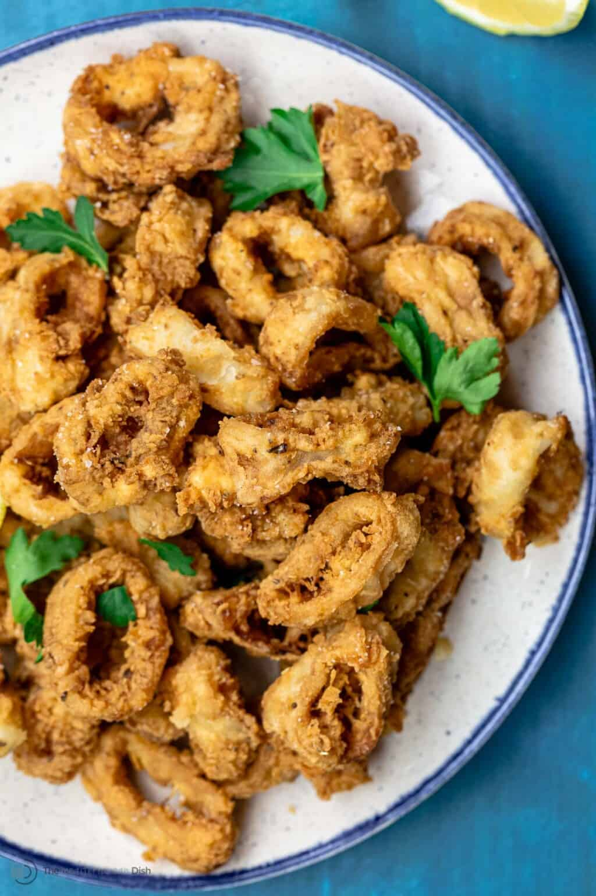

Calamari

Description
Fried calamari is a popular seafood dish. Squid is coated in batter and deep fried to golden perfection. It is commonly served with a splash of citrus and some dips.
Ingredients
- 1 pound frozen calamari tubes thawed
- Kosher salt
- 1/2 cup 2% milk
- 1 1/2 cup all purpose flour
- 1/3 cup cornstarch
- 1/2 teaspoon baking powder
- 3/4 teaspoon dry oregano
- 1/2 teaspoon black pepper
- 1/2 teaspoon cayenne pepper
- Grape seed oil as needed
- 1 lemon cut into wedges to serve
Steps
- Slice the calamari tubes into ¾-inch thick rings.
- In a medium bowl, stir 1 teaspoon Diamond Crystal kosher salt in ½ cup milk.
- Add the calamari rings to the milk mixture and refrigerate for 30 minutes.
- In a large bowl, whisk together the flour, cornstarch, baking powder, oregano, black pepper, and cayenne (make sure the mixture is well combined).
- Prepare a large colander and set it on top of a large bowl. Using a pair of tongs, take a portion of the calamari rings (about ½ of them) shake off excess milk and toss the calamari in the flour mixture. Toss the calamari to coat evenly. Put the coated calamari in the colander. Repeat with the rest of the calamari.
- Turn your oven on a low 150 degrees F. Prepare a large sheet pan and set a wire rack on top. Top the wire rack with paper towel.
- Heat 4 inches of grape seed oil in a small cooking pot (I used a 2.5 quart pot) to somewhere between 350 and 365 degrees F. To test your oil, drop one calamari ring, many bubbles will form around it and the calamari will begin to float.
- Once your oil is ready, using a pair of tongs, gently add some of the calamari in and fry for about 3 minutes or until golden brown. Remove the calamari from the oil and arrange it on the paper towel on top of your prepared wire rack. Immediately season with kosher salt, then transfer to your warm oven to keep warm while you work on the rest. Repeat until you have fried all the calamari.
- Transfer the fried calamari to a serving plate and finish with a squeeze of lemon juice!